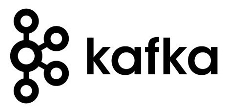
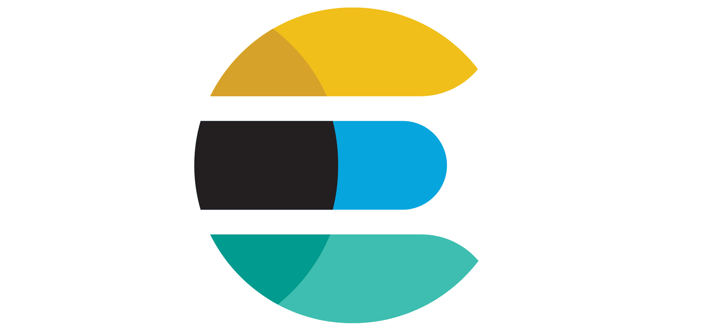

Technologies for advanced programming (TAP) - 2022
Contents
Technologies for advanced programming (TAP) - 2022¶
Syllabus¶
General knowledge of technologies useful to build end-to-end solutions to analyse, manage, store, process and visualize data acquired in real time.
Using simplified and cross infrastructure software deployment systems (containers) and microservices orchestration tool (compose/kubernetes), the course will present “on-the-edge” technologies used for data ingestion, pipelines, big data processing and visualization
Using an agile and multidisciplinary approach: topics, technologies and enviroments discussed will be applied to real case examples
Course detail¶
Lessons¶
Mon 14-17 (Aula 4)
Fri 14-17 TBC (Aula 3)
Telegram Group¶
GitHub Organization¶

Tutorato¶
Lemuel Puglisi
What we are going to deal with ?¶
Technologies for realtime data collection and analytics systems¶


Meme¶

Concepts¶
Areas of interests where technologies can be applied to get more value
Big Data¶
Datasets whose size is beyond the ability of typical database software tools to capture, store, manage, and analyze


Digital Marketing¶
Digital marketing is a form of direct marketing which links consumers with sellers electronically using interactive technologies like emails, websites, online forums and newsgroups, interactive television, mobile communications etcetera (Kotler and Armstrong, 2009)

Literate Programming¶
Literate programming: Instead of imagining that our main task is to instruct a computer what to do, let us concentrate rather on explaining to human beings what we want a computer to do.
Donald Knuth (1984)

Stream Processing¶
The definition of stream processing is exactly opposite of my definition of batch processing. In stream processing, you do not collect your data to reach certain quorum or timeout before you trigger your process. As soon as the data event is received, the program processes it, and creates the output. It’s event processing. So “real-time” word is somewhat redundant. Yet, a lot of systems do use “real-time” to describe them as low latency systems. sing-what-are-your-choices/

Machine Learning¶
Machine learning is the science (and art) of programming computers so they can learn from data
Aurélien Géron in Hands-on Machine Learning with Scikit-Learn and TensorFlow.
Cloud Computing¶
Cloud computing is a style of computing in which scalable and elastic IT-enabled capabilities are delivered as a service using internet technologies.
Gartner Glossary

Technologies¶
Containers¶
A container is a standard unit of software that packages up code and all its dependencies so the application runs quickly and reliably from one computing environment to another.

Workload management¶
Kubernetes is a portable, extensible, open-source platform for managing containerized workloads and services, that facilitates both declarative configuration and automation. It has a large, rapidly growing ecosystem. Kubernetes services, support, and tools are widely available.

Data Ingestion¶
Logstash is an open source data collection engine with real-time pipelining capabilities.
Logstash can dynamically unify data from disparate sources and normalize the data into destinations of your choice. Cleanse and democratize all your data for diverse advanced downstream analytics and visualization use cases.

Data Streaming¶
Kafka® is used for building real-time data pipelines and streaming apps. It is horizontally scalable, fault-tolerant, wicked fast, and runs in production in thousands of companies.

Data Indexing¶
Elasticsearch is a distributed, RESTful search and analytics engine capable of addressing a growing number of use cases. As the heart of the Elastic Stack, it centrally stores your data so you can discover the expected and uncover the unexpected.

Data Visualization¶
Kibana is a free and open user interface that lets you visualize your Elasticsearch data and navigate the Elastic Stack. Do anything from tracking query load to understanding the way requests flow through your apps.

Notebooks¶
Project Jupyter exists to develop open-source software, open-standards, and services for interactive computing across dozens of programming languages.


Social Impact of Big Data¶
big data applications such as lifestyle, disaster relief, energy and sustainability, critical infrastructure, and so forth that indicate promise for making a societal impact through the use of analytics. Big Data & Analytics for Societal Impact
Ethics and AI: tackling biases hidden in big data¶
▶
The era of blind faith in big data must end¶
▶